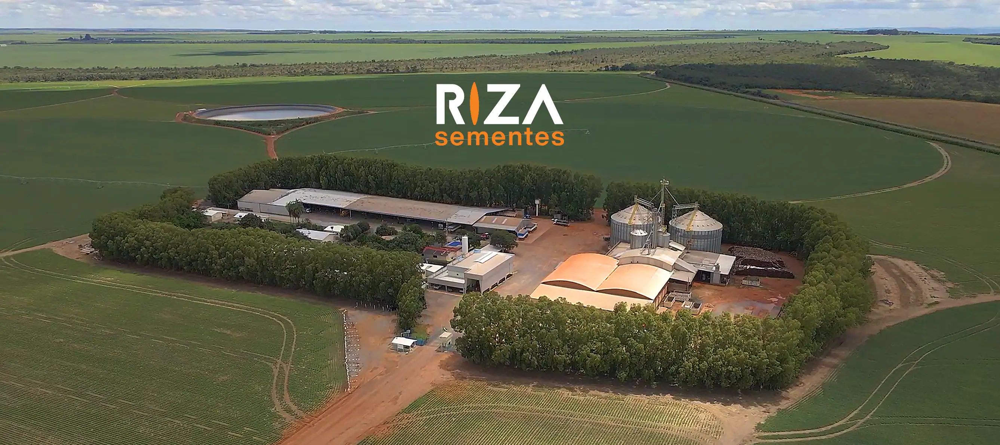
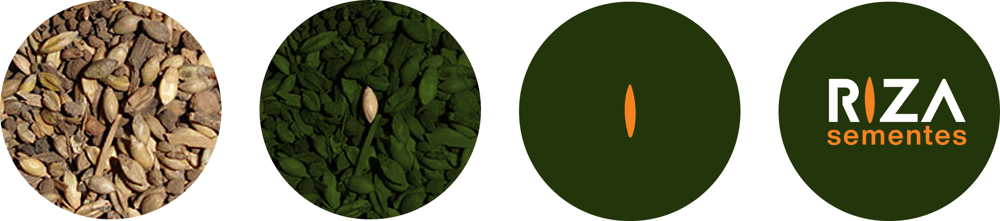
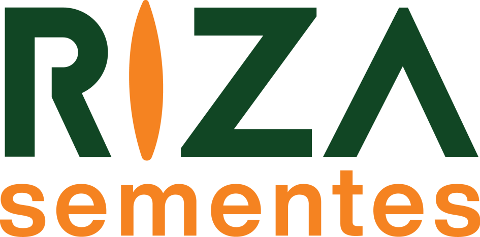
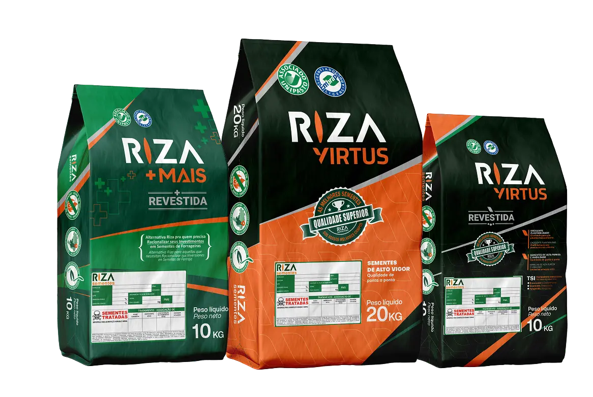
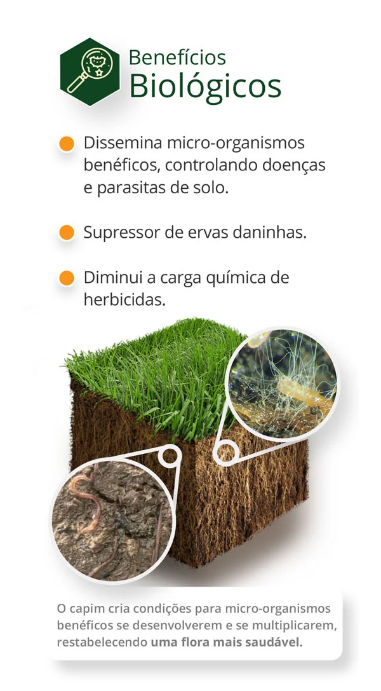
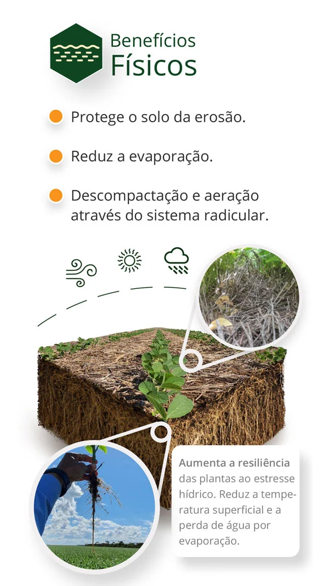
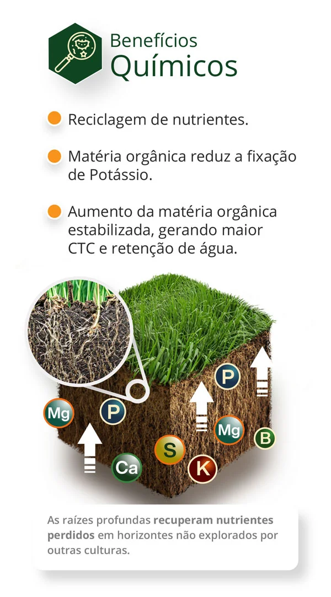

YouTube
#14
→
#3
Subscriber ranking

Ascent to Market Recognition
Within just 9 months, Riza Sementes experienced an unprecedented rise across key platforms.
Subscriber ranking
Audience ranking
Audience ranking
Maintained leadership
New Brand in a Legacy Market
Riza Sementes, a new premium seed brand, faced the challenge of rapidly establishing credibility and presence in a highly competitive agricultural market dominated by long-standing players.
Sementes means "seeds" in Portuguese and it couldn't be a better starting point.
Rather than default to generic agribusiness cues, the system leaned into the sector's own colors, orange and green, sharpened by precise geometry. Its signature move: the letter I, reimagined as a seed shape, anchoring the wordmark in the product itself.


| Core Principle | Logo Expression | Market Impact |
|---|---|---|
| Premium Quality | Organic, structured geometry—meticulous design | Signals precision and care in every detail |
| Applied Knowledge | Seed as symbol of deep understanding | Communicates expertise rooted in science |
| Category Codes | Orange + green — the sector's shared visual language | Earns instant legitimacy with industry veterans |
[1 sentence framing the deliverables — e.g., "One system, many surfaces."]
The mark applied at scale, and the fine-grain details that define its voice.

Identity translated into the object itself — where brand meets hand.

Fleet, facilities, signage — the brand inhabiting real space.


Translating agronomic science into clear, ownable visual language for the field.



"Renato introduced a distinctive thinking framework that significantly strengthened our brand. Across all our units, his visual language ensures everything aligns with our core purpose. He captured our essence and translated it into a cohesive, impactful identity. I confidently recommend his ability to deliver strategic design solutions."